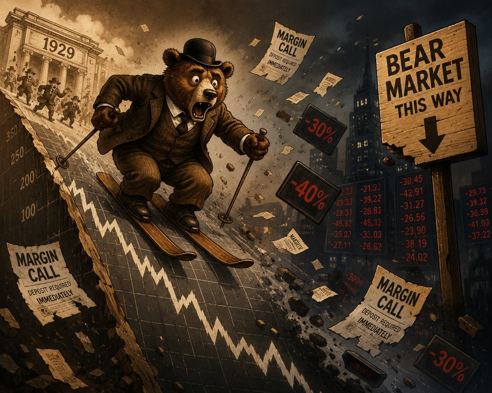

After 20 years surviving the financial markets as well as buying and selling a few homes, I still think about a critical decision to hold off instead of moving forward.
It was circa-2007 and I worked in a busy real estate office in San Diego. The fervor surrounding the market was palpable and listings were selling well over asking price. People were buying homes they couldn't afford, living there for a little while and then selling for a $50,000 profit.
There was a sense that anyone who was not doing it was leaving money on the table. We were in America's Finest City and demand was never going to abate. Prices were only going to continue to rise, so the payments didn't really matter.
My ex-wife and I were recently married and wanted to be a part of things. Neither one of us were making very much. A guy I worked with in the office encouraged us to shop for a condo and we were pre-approved for a $450,000 loan at 8 percent.
He was incentivized to sell these types of loans, which were called stated income because the approval didn't rely on actual numbers, just a statement. He could get it through as a 'favor' to us. I remember scratching my head reviewing the numbers: the monthly payment would have been a little over 90 percent of our gross monthly income.
I remember thinking, "Why not eat Ramen for a few months to make 50 grand?" The worst case would be that we would have to sell early.
Fortunately, somehow, I found some caution. Maybe it was dumb luck, or maybe I just don't like Ramen that much.
Holding off felt stupid at the time because people were genuinely getting rich that way. That so-called friend was getting rich that way. The payment didn't matter because it was theoretical.
It worked for a lot of people, until it didn't. And it wasn't until many years later, when I saw the Michael Moore movie Capitalism: A Love Story and The Big Short, that I realized what a horrible impact stated income loans and predatory lending practices had on our country.
Of course, "stated income" loans got renamed "liar loans" once the lawsuits started, and a stack of new regulations came down to make sure it could not happen again (hopefully).
The experience shaped everything I believe about the use of debt, as well as whether people are honest about their intentions. Trust, but verify. This is a Russian proverb Ronald Reagan loved to quote during arms control negotiations with Mikhail Gorbachev.
Same Story, Different Asset
The use of margin debt for equity purchases has a similar storyline as the stated-income loan fiasco from 2007. Asset prices always rise, so the interest payment on a margin loan doesn't really matter. Anyone who doesn't use leverage is a coward who is willing to leave money on the table. The mechanism that produces that idea is the same in both areas, and the United States has been writing it since at least 1929.
In the run-up to the 1929 crash, brokers were lending up to 90 percent of a stock purchase. With such a high amount of leverage, a stock barely had to fall for the equity to vanish, at which point came the dreaded margin call.
That last word was literal in 1929. The phone would ring, and the broker would inform the account holder that the collateral had eroded and more cash was needed by the end of the day, or the position would be liquidated. The cascading sales when the market started to drop were not panic in the abstract.
These were forced liquidation events. People who did not have the cash on hand to cover the required 10 percent equity had their stocks sold out from under them at whatever price the market would bear.

The infrastructure of the modern market was being built in real time, as people lost fortunes in moments. The lesson was that 90 percent leverage was not a feature, it was a fuse.
Regulation T came out of the Securities Exchange Act of 1934 and capped initial margin at 50 percent. So, the modern math goes like this. An investor puts in $50,000. The broker puts in $50,000. The combined position is $100,000.
FINRA's regulatory minimum for maintenance margin is 25 percent, but most retail investors never actually see that floor. Brokerage firms set their own "house requirements," which typically run 30 to 40 percent depending on the security. So, in practice, the cushion before a maintenance call kicks in is closer to 30 percent equity than 25. Once an account hits the line, the "call" still happens, though in modern brokerages it's mostly automated. The broker can liquidate without even calling you first.
Warren and Charlie's Take
Warren Buffett quoted his business partner Charlie Munger in a CNBC interview from 2018, making a case against leverage:
"Charlie says there are only three ways a smart person can go broke: liquor, ladies and leverage. Now the truth is, the first two he just added because they started with L. It's leverage."
Charlie Munger, via Warren Buffett
Buffett has maintained that position. He said there is no way to know how far stocks can fall in a short period, and that even small borrowings can rattle a mind enough to produce bad decisions in a falling market.
For Buffett, the value of only buying with cash is peace of mind.
The interesting wrinkle is that Munger famously conceded that Berkshire could easily be worth twice what it is now if leverage had been used. The extra risk would have been miniscule.
For Munger and Buffett, with their concentrated positions and decades-long horizons, modest leverage probably would have been fine. The reason they did not use it, in his telling, was the responsibility of holding shareholders' money. If they lost three quarters of their net worth, they would have still been very rich. Losing three quarters of a shareholder's life savings amounted to a different level of risk, one they weren't willing to take.
Leverage can make sense (and cents) in some situations. Being able to avoid forced liquidation events is the key, because that's where things really get nasty.
Other names are worth knowing. Stanley Druckenmiller built one of the greatest hedge fund track records in history using leverage strategically, though he is famously cautious about it for individuals.
Carl Icahn built his empire on borrowed money. He and Druckenmiller are both operators with infrastructure, cash piles and time horizons that mostly don't exist in a Robinhood account.
On the other side, Jesse Livermore made and lost multiple fortunes on margin in the early 1900s before he ended his life in 1940. Most recently, Bill Hwang's Archegos Capital vaporized roughly $20 billion in two days in March 2021 when his concentrated swap positions hit margin calls and the prime brokers liquidated him in sequence.
The list is consistent. Leverage works until the moment it doesn't, when suddenly the exits are blocked off and all that hard-earned equity simply disappears.
The Math That Looks Like Free Money
Here is the trap that's almost gotten me a few times.
I've held JEPQ for years. This is JPMorgan's Nasdaq-100 covered call ETF, which currently yields around 11 percent on monthly distributions. A Robinhood Gold subscriber gets the first $1,000 of margin interest-free, with the rate above that running around 5 percent right now.
Most active accounts have meaningful margin buying power available. So why not borrow against existing equity, buy more JEPQ and collect the spread?
The yield on JEPQ is 11 percent and the cost of borrowing is five. The spread is six percentage points. Using five-figures of available margin credit looks like free money, an income stream that more than covers the carrying cost.
The framework looks even better than 2007 real estate, because the income covers more than the carrying cost. How could you lose?
Taxes eat into the gains. Distributions from JEPQ are mostly ordinary income, not qualified dividends. The bulk of the yield comes from option premium written through equity-linked notes, which gets taxed at the marginal rate, not the lower long-term capital gains rate. In a typical bracket, the after-tax yield drops from 11 percent to around eight percent.
Margin interest is technically deductible against investment income, but only for filers who itemize, and the standard deduction has been eating that benefit alive for most filers since 2018. The honest after-tax spread is closer to two to three points than six. Not nothing, but not "why isn't everyone doing this" money.
The second is structural. JEPQ is a covered call fund. The entire design trades upside for income. Levering a fund that has a stated goal of dampening equity returns means fighting the strategy itself. The investor pays margin interest to amplify exposure to a product that structurally underperforms any strong rally. Anyone genuinely wanting leveraged tech exposure should lever the index, not a fund that promises "less volatility than the index."
The third is drawdown. JEPQ has roughly a 0.78 beta to the Nasdaq-100. In a sharp tech selloff, it falls less than QQQ, but it still falls. Adding margin against new shares means the cushion between current value and the maintenance line is thinner than people think. A 20 to 25 percent Nasdaq drawdown produces a margin call on a fund investors specifically bought to soften drawdowns. Forced selling happens at exactly the moment when the distribution yield is most attractive, because price has fallen. The cascade is similar to the crash of 1929.
If margin is not the right answer, what is? For cash sitting idle, a position in a high-yield Treasury ETF like TBLL or some additional JEPI does the income work without crossing into leverage. For a hands-off version of the same logic, Wealthfront's automated investing platform handles allocation and tax-loss harvesting automatically. Using this link adds a $50 bonus on a $500 funding deposit.
For an active brokerage, Robinhood Gold is among the more honest in the industry on the margin question. The first $1,000 in margin is interest-free with the subscription, the rate above that is competitive, and the platform is straightforward about the terms. Going all in on the available buying power is still a bad idea.
Why I Am Sitting in Cash
Margin is a tool. In specific situations, it can work if used briefly and sized correctly. The trouble is the situations where it makes sense are rare and it takes a lot of discipline. The moment it feels most attractive is usually the moment to be most suspicious of the impulse. It's very easy to click the buy button, but finding the exit can be problematic.
FINRA total margin debt is at record territory. Net credit balance is the most negative it has ever been. Hedge fund leverage is at all-time highs. The 2026 setup looks structurally similar to the housing market from 2007, with stated-income loans replaced by Robinhood Gold subscriptions. Brokers have been replaced by zero-commission apps that make it easy to use leverage. The instruments are different. The psychology is the same.
The idea of forced liquidations is more terrifying than missing out on being rich, for me anyway. Also, that $450,000 loan at 8 percent is still in my head 20 years later. Sometimes, our lives are defined more by the actions we don't take, instead of the ones that we do. Choosing to hold off on purchasing was a seminal moment, a crossroads where one choice could have led to disaster.
For the data side of this argument, the FINRA prints, the IBKR numbers, and the historical comparisons of where leverage has topped before, see the companion piece in this issue: What the Margin Data Is Telling Us.
Nothing in this article is investment advice. The Pinnacle is one writer's analysis. Do your own research, talk to a licensed advisor, and never put money into anything you do not understand.